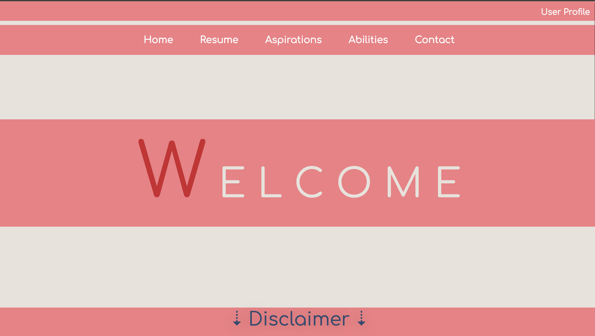
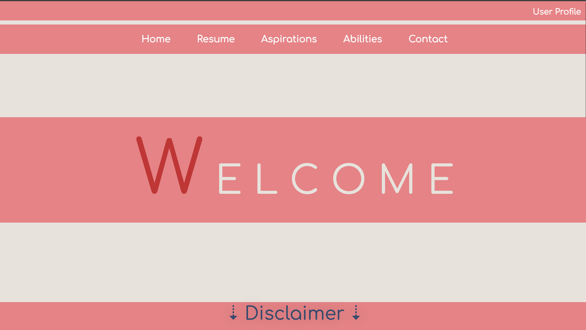

 X
X
Living Environment was my first ever complete webpage development project. It was a group assignment to create a faux non-profit org for a web design course. Out of six members I was voted group leader, and made responsible for the landing and gallery pages. My favorite feature at the time was the hover effect that I had newly learned how to assign for buttons and links. As I was assigned the gallery page, I had learned how to make photos enlarge when clicked. which was also really exciting to a first project. As group leader I was also responsible for making all the pages responsive. That was really challenging as this was my first project and I had little experience and I do wish I had made the navigation hidden and accessible with js. I also would have liked to make my font more accessible in all display sizes.
This was my first personal project. It was recommended by a friend, who provided me a prompt(request) to make them a basic mock real estate Although the outcome of this project appears extremely simple, the highlights were my ability to develop a webpage off of a defined prompt. My friend provided me with the request, I created a wireframe and sitemap and then developed the pages based on their approval. In hindsight the only thing that could have made this project better was if I had understood more css and js concepts to make the site more interactive.
This is not my first attempt at creating a digital portfolio. In total I have 3 previous draft websites that are all distinctly different. However this portfolio has to be the most personalized and advanced version produced thusfar. My favorite features in this website is the animations, particularly the text animations. I’m still learning new ways to incorporate js elements into my pages to make them more interactive and the typewriter text provided a very engaging example. I am also really proud of working contact form and responsive navigation. If I had to improve anything (which I am), would be figuring out the backend qualities of my registration/login form. As well as making the displays more distinct in their responsive forms.